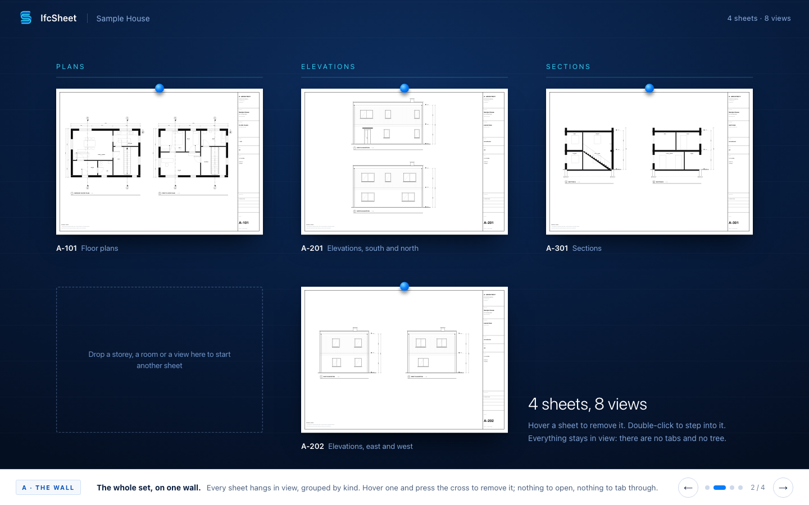
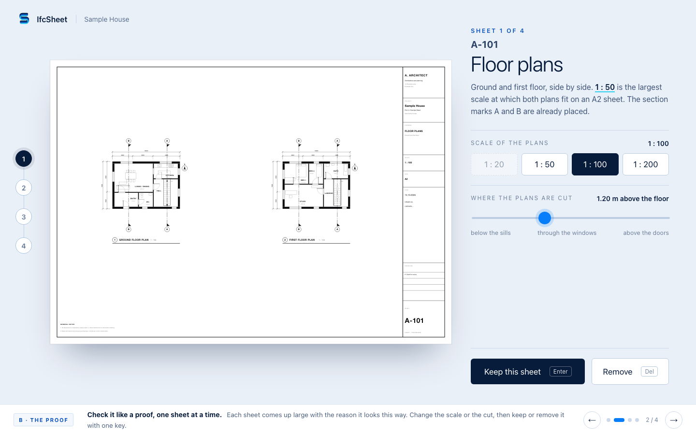
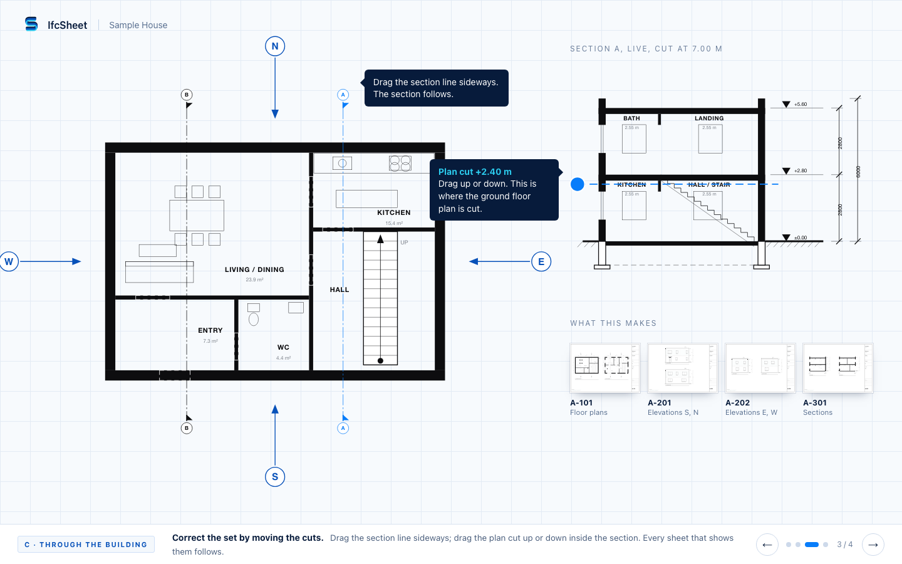

IfcSheet · direction 20 · a draft set is there when the model opens
Three ways to meet, and correct, a set that already exists.
The model is open and a draft set is already drawn: one plan per storey, four elevations, two sections, each on a sheet with a fitting scale and a filled title block. All three concepts start there. They differ in how you look at it and where you put your hand to change it.
You correct a set. You do not build one. Every mock below is a small story you can step through with the arrow keys or the buttons at the bottom. The drawings are the same Sample House in all three.

CONCEPT A
The Wall
The whole set hangs on one endless wall, and you correct a sheet by leaning in to it where it hangs.
What is different
- No tabs, no tree, no sheet list. You see every sheet at once, like a wall of pinned drawings.
- The controls (scale, cut height) appear beside the sheet you lean into, and go away again.
- Opening a sheet is just moving closer; Esc steps back.
What it costs
- A smooth zoomable surface that stays fast with forty or sixty sheets is real engineering. Sheets far away have to be drawn cheaply.
- A big set needs a way to find things on the wall (search, a small map). Without it the wall turns into a mess.
- You give up the plain list of sheets that every office checks against.

CONCEPT B
The Proof
You read the set the way you read a printer's proof: one sheet at a time, each telling you why it looks that way, and you keep it, change it or strike it.
What is different
- It starts as a drawing register you already know, then walks you through the sheets.
- Every sheet says why it is as it is ("1 : 50 is the largest scale at which both plans fit on A2").
- At the end, a list shows what you changed, sheet by sheet. Nothing you did not touch moves.
What it costs
- It is a guided path. People who want to jump straight to sheet 14 will find it slow, and sixty sheets mean sixty steps unless there is a "keep the rest" key.
- The reasons and the picture alternatives must be good for every decision; one weak suggestion and the idea falls apart.
- Feels the closest to tools you know, so it is the least surprising and the least memorable.

CONCEPT C
Through the Building
You correct the set by touching the building: every plan, section and elevation is a mark on the model, and moving the mark moves every sheet that shows it.
What is different
- Drag a section line across the plan and the section redraws. Drag the plan's cut up or down inside the section.
- Hover a mark and its sheet lights up; hover a sheet and its marks light up.
- A new view is made by dragging a storey or a room from the model onto a sheet.
What it costs
- Plans and sections must be re-cut live while you drag. That needs a fast geometry engine and gets heavy on large models.
- It fits cuts, plans and elevations well. Schedules, notes and details have no place on the building, so a sheet view is still needed.
- It asks architects to think "marks on a building" rather than "views on a sheet". That is a new habit.
Our suggestion
Take A, the Wall as the frame: it is the only one that answers "show me the whole set" and "go in and come back" without any list, and it is the furthest from the tools people know.
Borrow C's linked cuts for the moment you step into a sheet: the section line on the plan and the cut handle on the section are the corrections architects make most, and they feel like drawing, not like settings.
Borrow one small thing from B: the one-line reason under a sheet ("1 : 50, the largest that fits A2"). It costs almost nothing and makes the draft trustworthy.
Which two combine well
A with C. The wall is how you see and move through the set. The linked marks are how you correct what is on a sheet once you are close to it.
B alone is the safest choice if the first release must feel familiar to a cautious office. It combines poorly with A, because both want to own the order you look at sheets in.
Keys in every mock: left and right arrows step through the story. In A: hover a sheet and press the cross, scroll over the ground floor plan in state 3, double-click a sheet, Esc to step back. In B: Enter keeps, Delete removes. In C: drag the section lines and the blue dot in state 3, drag the chips in state 4.